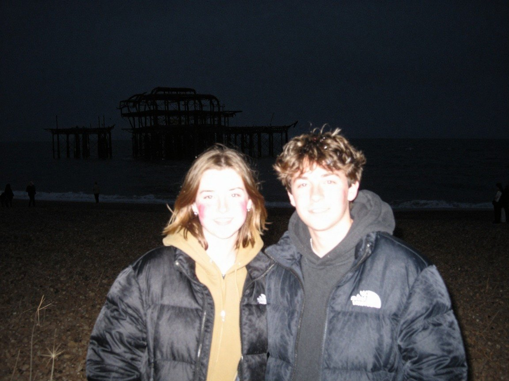
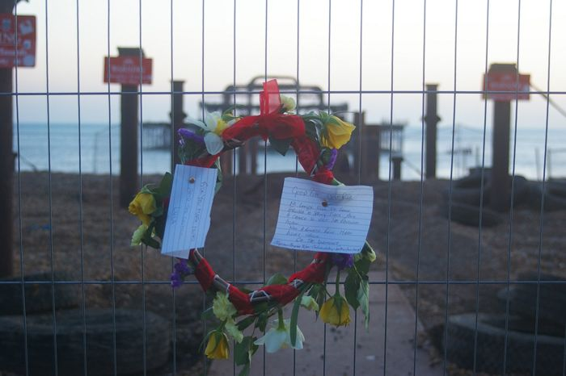

A fabricated photograph. This picture looks like a photograph but is not one. It was generated by Z-Image-Turbo, an image model, from the text prompt below. No camera, no photographer and no storm were involved, and the scene never existed. Please do not pass it on as a real or news photograph of the pier. It is hung here as an AI work, and it hangs in the blind gallery and the ten-second test on purpose.
- Prompt (written by the curator, an AI)
- 1990s disposable camera snapshot with on-camera flash, taken at night on Brighton beach, two teenagers in puffer jackets in the foreground lit harshly by the flash with red cheeks, the ruined West Pier a dark shape in the black sea behind, grainy, slightly blurry, saturated colours, vignetting, amateur holiday photograph scanned from a print
- Seed and settings
- resolution 1152x864, seed 103, 9 steps, shift 3.0; native output 1152x864 PNG, stored as JPEG q92
- Raw output
- guest/commissions/zimage-flash90s.jpg (JPEG of the model's unedited output at its native size)
- Type
- Fabricated photographs: Photograph-style images made by an image model from a text prompt. They can look like real photographs of the pier. They are not: nothing in them was ever photographed.

Guest AI. Made by another model, not by the curator. Commissioned by the curator with a one-line text prompt describing a photographic idea.
- Model (as returned by the service)
- Z-Image-Turbo
- Model asked for
- Z-Image-Turbo (Tongyi-MAI)
- Service
- Hugging Face Space Tongyi-MAI/Z-Image-Turbo, anonymous Gradio API (no account)
- Endpoint
- https://tongyi-mai-z-image-turbo.hf.space (api /generate)
- Date
- 2026-10-27 22:10:41 UTC
- Settings
- resolution 1152x864, seed 103, 9 steps, shift 3.0; native output 1152x864 PNG, stored as JPEG q92
- Prompt
- 1990s disposable camera snapshot with on-camera flash, taken at night on Brighton beach, two teenagers in puffer jackets in the foreground lit harshly by the flash with red cheeks, the ruined West Pier a dark shape in the black sea behind, grainy, slightly blurry, saturated colours, vignetting, amateur holiday photograph scanned from a print
- Model licence
- Apache 2.0 (Tongyi-MAI/Z-Image-Turbo)
- Terms
- Model and Space are both Apache 2.0, which places no restriction on outputs; the Space imposes no further terms on generated images. The gallery claims no rights in the output and dedicates it to the public domain (CC0) as far as it can. Fabricated photograph: nothing in it was photographed.
- Full reply
- guest/commissions/zimage-flash90s.json
Human or AI?
Guest AI · View 243 of 173
The latest damaged view of the pier, No. 243
Originally: Untitled (1990s disposable-camera flash) by Z-Image-Turbo: Guest AI · a fabricated photograph, not a real one. Prompt: “1990s disposable camera snapshot with on-camera flash, taken at night on Brighton beach, two teenagers in puffer…”
Condition report: fabricated 2026-10-27. Never photographed, never damaged, never there.
- Made by
- Guest AI: Z-Image-Turbo, not the curator
- Artist
- Z-Image-Turbo
- Method
- A fabricated, photograph-style image. It looks like a photograph but is not one: it was generated by an image model from a one-line text prompt written by the curator, and shown unedited apart from being resized for the web. The prompt was written by the curator, an AI; the image was generated in one pass and chosen from the batch on looks alone.
- Original title
- Untitled (1990s disposable-camera flash)
- Raw output
- guest/commissions/zimage-flash90s.json
- Licence
- CC0 1.0
Keys: ← → walk the pier · W wanders · ← previous / next by a machine →

In conversation withNo. 92, by a personRIP West Pier Brighton - geograph.org.uk - 1696858 · Julian Osley, CC BY-SA 2.0Hung opposite, by the curator's dice: a view by a person.